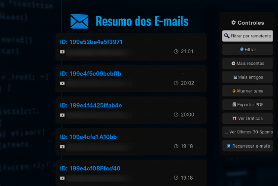
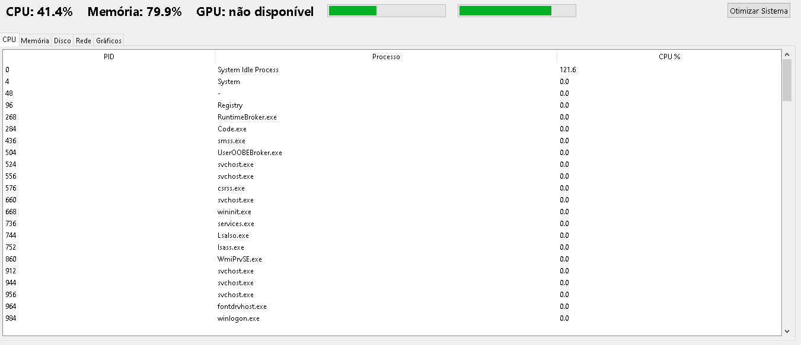
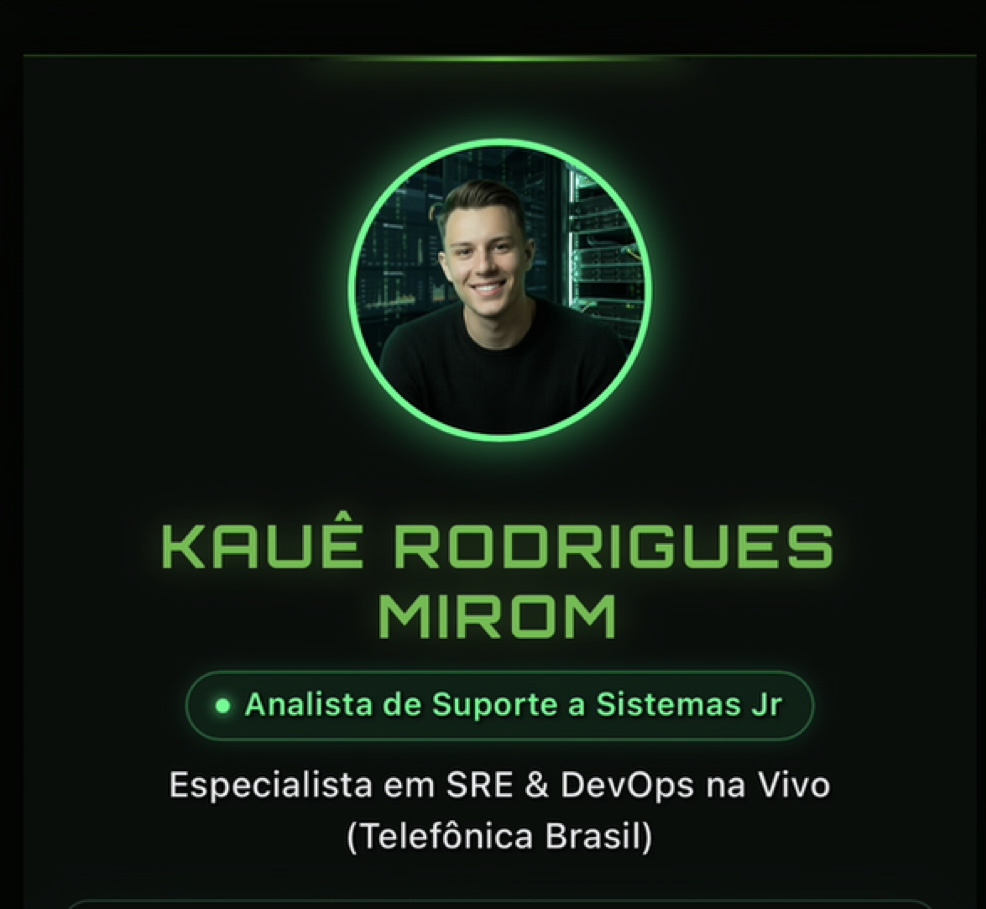
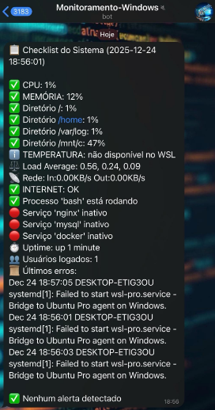
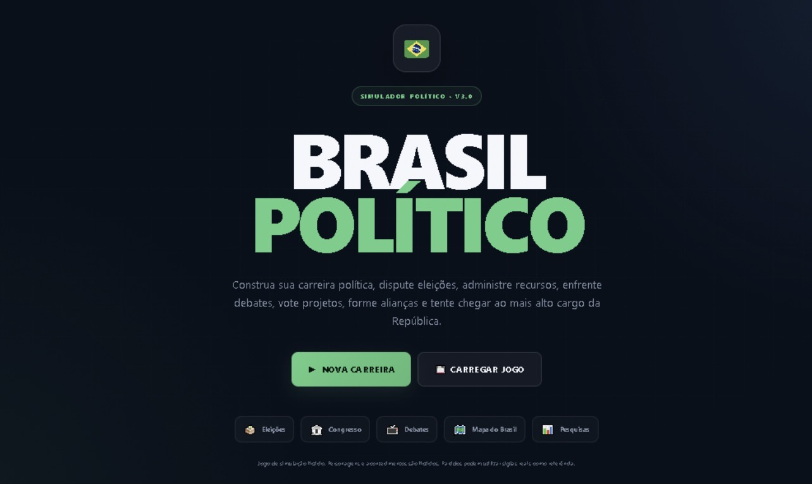

Resumo Inteligente de E-mails com Python + HTML + JS
Desenvolvi uma aplicação web que resume e organiza e-mails automaticamente, separando mensagens relevantes de spams e exibindo gráficos interativos com estatísticas de envio.
Ver Projeto
Analisador OTZ – Otimização e Monitoramento de Sistema
Uma aplicação desktop voltada para otimização e análise de desempenho de sistemas Windows, com foco em eficiência, leveza e usabilidade. O projeto nasceu da necessidade de automatizar tarefas de manutenção e oferecer uma visão clara do comportamento do sistema em tempo real.
Ver Projeto
Meu Primeiro - Site Pessoal com HTML/CSS
Desenvolvi um site responsivo voltado para minha apresentação profissional e portfólio. Esse projeto foi fundamental para minha evolução na programação web — após lançar a versão inicial, me dediquei intensamente e consegui alcançar a versão atual, muito mais completa e refinada.
Ver Projeto
Automação Linux com Telegram: CPU, Memória, Disco e Mais!
Agora consigo acompanhar o uso de CPU, memória, disco, conexão com a internet e até processos críticos — tudo em tempo real, direto no meu celular 📱. O script roda no Linux (via WSL) e está agendado com cron para verificar o sistema a cada 5 minutos. Se algo ultrapassa os limites definidos, recebo uma notificação instantânea no Telegram
Ver Projeto
Protótipo - Mapeamento de Jornada Do Usuário
Atividade desenvolvida na faculdade na disciplina Jornada e Interface do Usuário, com foco na aplicação de conceitos de UX/UI Design, experiência do usuário e construção de interfaces digitais.
Ver Projeto
Simulador de Jogo Web - Carreira Política Brasileira
O projeto foi construído utilizando HTML, CSS e JavaScript, com uma arquitetura modular que separa a interface, regras de negócio e dados da simulação.
Ver Projeto